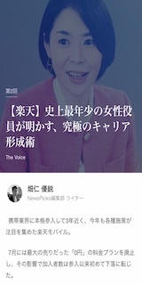
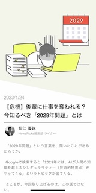
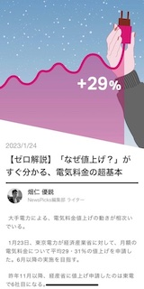

My Career
2012年4月、読売新聞東京本社に記者職で入社。千葉支局で5年半、事件・事故を中心に取材。
2017年3月に千葉県松戸市で発生したベトナム人女児殺害事件では、県警キャップとして取材を指揮。
このほか、地域ローカルの話やスポーツ取材も経験し、2013年夏には甲子園で取材経験もある。
2017年冬に東京本社経済部に異動。証券（兜）、経済産業省・エネルギー企業、総務省・IT企業、重工の各クラブを経験。
主な取材トピックは、証券ではマネックスのコインチェック買収、経産省では北海道ブラックアウト、東電問題などエネルギー政策全般。
総務省では、楽天の携帯参入やヤフーLINE合併、菅政権が進めた携帯料金引き下げ、NTTによるドコモTOBなどグループ再編など。
在職中、10本以上の一面スクープや、経営者インタビューも多数実施。
2022年1月にNewsPicks編集部に転職。編集者/記者として通信業・エネルギー業界をメインにしつつ、幅広い分野で執筆。
My Career
主なトップインタビュー実績
>NTT、楽天グループ、NTTドコモ、Zホールディングス、ENEOSホールディングス、東京ガス、大和証券グループ
マネックスグループ、LINE、三菱ケミカルホールディングス、DeNA、関西電力など
Biographies

楽天副社長インタビュー

プログラミング学習

電気料金の超基礎